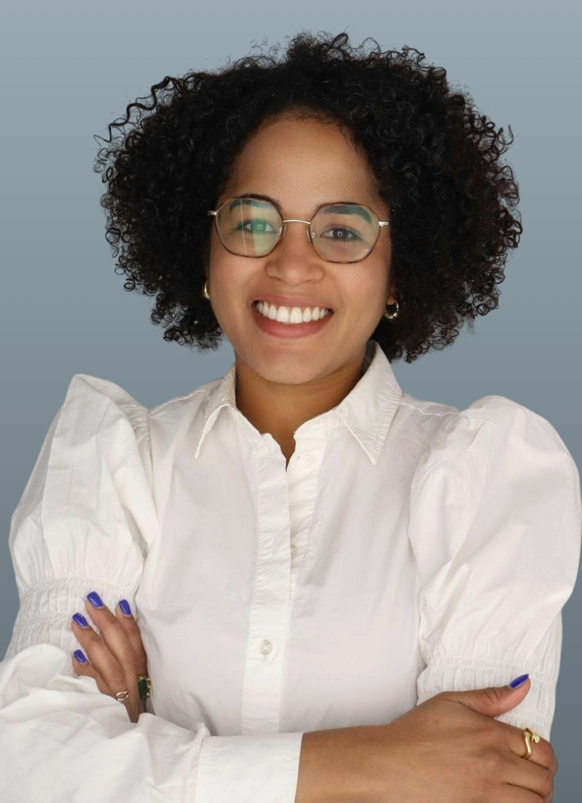

Alfonsina Frias is a leader in experiential learning and entrepreneurship education at NYU Stern School of Business. She designs and runs global, project-based programs that connect students with startups, companies, and innovation hubs around the world. She also manages and designs experiential events for the Bs in Business, Technology, and Entrepreneurship program (BTE).
With over ten years of experience in higher education, economic development, and the nonprofit sector, her work focuses on turning academic ideas into real-world impact. She has helped expand Stern's global presence by building partnerships in Latin America, Europe, Asia, and the Middle East, and by creating hands-on learning experiences where founders, industry leaders, and students work together on complex business challenges.
Before joining academia, Alfonsina worked as an economist at the Center for Monetary Studies of Latin America (CEMLA). There, she managed training programs for central bank officials across the region and conducted research on financial inclusion and education.
Alfonsina holds a Doctorate in Education from Arizona State University, where her research explored how experiential learning supports entrepreneurial mindsets, creativity, and teamwork.
Expertise & Professional Impact
Program Strategy
Designing integrated experiential learning modules that bridge academic theory with real-world practice.
Strategic Alliances
Cultivating impactful relationships between Higher Ed and corporate partners to provide meaningful student challenges.
Operational Excellence
Managing the orchestration of complex educational programs and events that drive meaningful institutional outcomes.